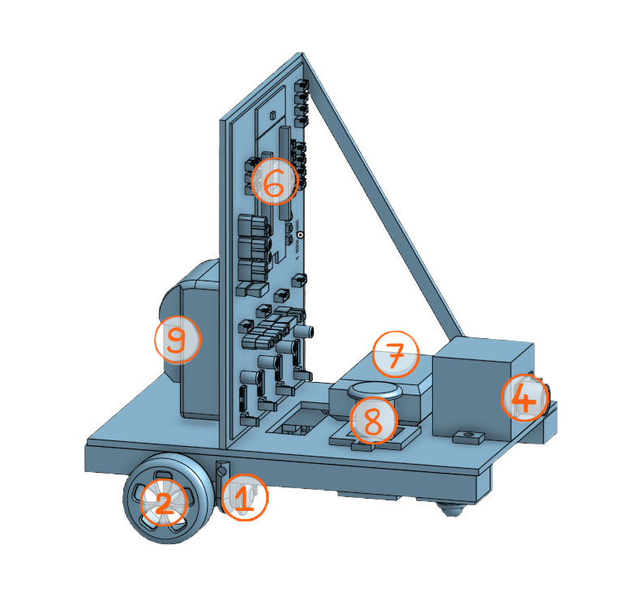

Le “Milk E-Way”, un robot de transport capable de déplacer un objet. Pour cela, le prototype respecte plusieurs prérequis. Il est tout d’abord capable de se mouvoir dans l'environnement qui l'entoure. En effet, il possède un mode manuel pour le contrôler facilement. De plus, il possèdera un système qui lui permet de suivre une ligne au sol grâce à des capteurs sous le robot. Son objectif sera, lorsqu'il est arrivé au bout de la ligne, de ramener un objet grâce à un éléctroaimant disposé à l'avant. Puis de revenir directement à sa position initiale sans repasser par la ligne.
